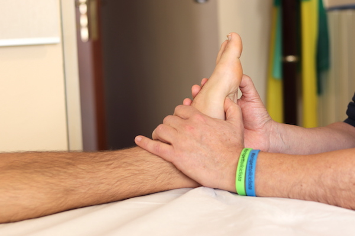

Riflessologia Plantare
Effetti terapeutici
La riflessologia plantare è una particolare tecnica di massaggio attraverso la quale è possibile ripristinare equilibri e funzioni del corpo agendo sulle terminazioni presenti sulla pianta del piede. Grazie a una sapiente manipolazione è possibile curare molti disturbi e mantenere il benessere.
Patalogie trattate
La riflessologia plantare viene attualmente impiegata per trattare dolori alla schiena, lombalgie e sciatalgie, problemi digestivi e mestruali, emicrania e per ridurre gli effetti negativi dovuti allo stress.
Cos'è e come funziona
I piedi hanno una straordinaria ricchezza di terminazioni nervose con collegamenti nei punti vitali dell’organismo. Nel piede, il corpo umano è rappresentato come un uomo seduto ed i punti riflessi si presentano con la stessa sequenza che gli organi corrispondenti hanno nell’anatomia del corpo. Toccando in modo specifico i punti di riflesso si genera un’azione utile a rilassare il corpo, lenire dolori e individuare patologie e anomalie negli organi. Si parte dalla testa, che è riflessa nelle dita e si arriva giù fino al bacino, che ha il suo punto riflesso nella zona del calcagno. I due piedi, inoltre, rappresentano ciascuno una metà del corpo, compresi gli organi che in esso si trovano.
Controindicazioni
Nessuna in particolare, ma il paziente dovrà comunicare al medico eventuali patologie e la relativa documentazione.